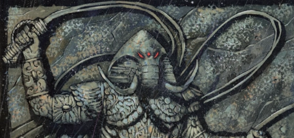

Hindu Finn. This is quite similar to the later Ms. Marvel (Kamala Khan), in that our protagonist (here, Rohan) is a reincarnation of a powerful spirit and thus endowed with superpowers.
Art by Simon Davis
| Story Title | Parts | Pages | w indicates a wraparound coverCovers | Year(s) | Issues | Writer | Artist | Colourist | Letterer |
|---|---|---|---|---|---|---|---|---|---|
| Bad Karma | 7 | 41 | M202: Simon Davis 1 | 2003 | Reprints: M339 (supplement)M202-208 | Pat Mills | Simon Davis | <-- | Ellie de Ville |
| Kali Yuga | 6 | 48 | 0 | 2004 | Reprints: M346 (supplement)M218-223 | Pat Mills | Simon Davis | <-- | Ellie de Ville |
| Return Of The Jester | 8 | 48 | M245: Simon Davis M249: Simon Davis 2 | 2006 | Reprints: M359 (supplement)M245-252 | Pat Mills | Simon Davis | <-- | Ellie de Ville |
| year | episodes | pages |
| 1994 | 0 | 0 |
| 1995 | 0 | 0 |
| 1996 | 0 | 0 |
| 1997 | 0 | 0 |
| 1998 | 0 | 0 |
| 1999 | 0 | 0 |
| 2000 | 0 | 0 |
| 2001 | 0 | 0 |
| 2002 | 0 | 0 |
| 2003 | 7 | 41 |
| 2004 | 6 | 48 |
| 2005 | 0 | 0 |
| 2006 | 8 | 48 |
| 2007 | 0 | 0 |
| 2008 | 0 | 0 |
| 2009 | 0 | 0 |
| 2010 | 0 | 0 |
| 2011 | 0 | 0 |
| 2012 | 0 | 0 |
| 2013 | 0 | 0 |
| 2014 | 0 | 0 |
| 2015 | 0 | 0 |